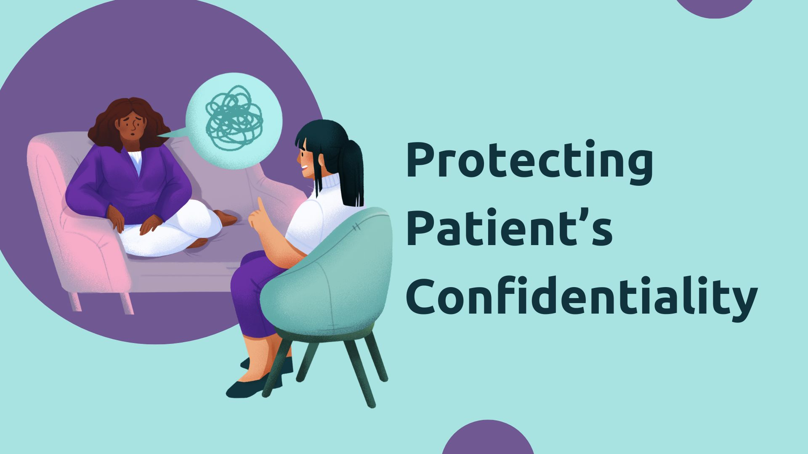
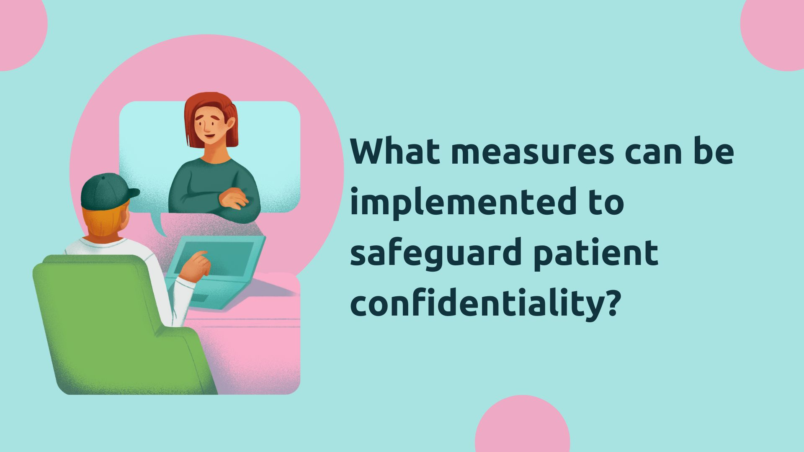

Relevant Laws in the Philippines
In the Philippines, protecting patient confidentiality is a legal and ethical obligation. The following laws govern the confidentiality of health information:
- Republic Act No. 10173 – Data Privacy Act of 2012: This law aims to protect personal information, including health data. It mandates that personal information be securely stored and accessible only to authorized individuals.
- Republic Act No. 7160 – Local Government Code of 1991: This law includes provisions on how patient data should be handled at the local level.
- Republic Act No. 9442 – Magna Carta for Disabled Persons: This Act ensures the protection of the personal and medical data of individuals with disabilities.
- Health Insurance Portability and Accountability Act (HIPAA) standards: While HIPAA is a U.S. law, international healthcare practices often align with similar standards to ensure confidentiality globally.
Best Practices for Protecting Patient Confidentiality
Healthcare providers should adopt the following best practices to ensure patient confidentiality is maintained:
- Limit Access to Medical Information: Ensure that patient information is accessible only to authorized personnel who need it for treatment, payment, or healthcare operations.
- Obtain Informed Consent: Before sharing any patient data, always obtain explicit written consent from the patient, unless required by law.
- Secure Storage and Transmission: Use secure methods to store and transmit medical records, such as encryption and secure servers.
- Confidential Communication: Ensure that all patient communications are confidential, such as using private spaces for consultations and avoiding discussing patient information in public areas.
- Employee Training: Provide regular training to all staff members regarding patient confidentiality policies, security protocols, and privacy laws.
- Data Anonymization: When conducting research or using patient data for studies, anonymize the information to ensure no personally identifiable data is exposed.
Why Protecting Patient Confidentiality Matters
Protecting patient confidentiality is vital for several reasons:
- Patient Trust: Confidentiality ensures patients trust healthcare providers, making them more likely to share necessary information for accurate diagnosis and treatment.
- Legal Compliance: Violating patient confidentiality can lead to legal consequences and penalties, including fines and loss of medical licenses.
- Ethical Responsibility: Healthcare professionals are bound by ethical guidelines to respect patient privacy and maintain confidentiality at all times.
- Preventing Harm: Disclosing personal health information without consent can cause harm to the patient, including emotional distress, discrimination, or even jeopardizing employment opportunities.